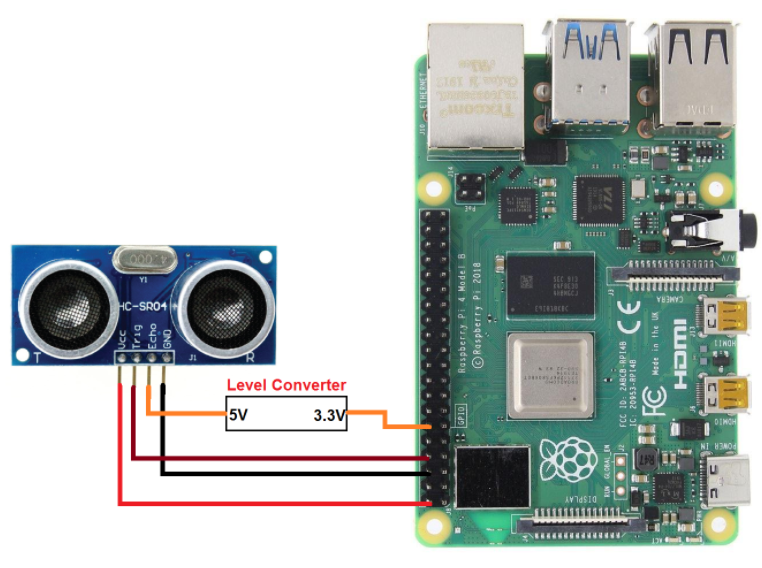
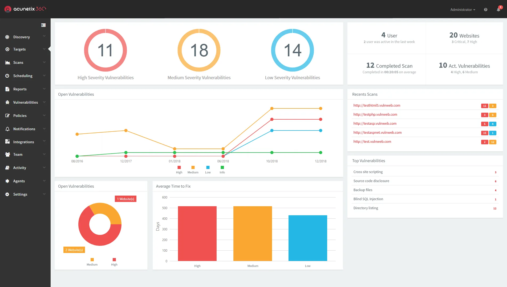

Projects

Smart Environment Monitor
Designed and developed an IoT-based Smart Environment Monitoring System that integrates IR and Ultrasonic sensors with Raspberry Pi to collect real-time environmental data. Implemented Python-based data acquisition and preprocessing pipelines, enabling continuous monitoring and analysis of sensor readings. Applied machine learning techniques to classify sensor data and detect abnormal conditions. The system generates automated alerts based on predefined thresholds and ML-driven predictions, improving response time and situational awareness. This project demonstrates the integration of IoT, machine learning, and automation for real-world monitoring applications. Technologies & Tools: Raspberry Pi, Python, IR & Ultrasonic Sensors, Machine Learning, IoT

Web App Penetration Testing
Conducted web application penetration testing using DVWA (Damn Vulnerable Web Application) to identify and analyze common security vulnerabilities aligned with the OWASP Top 10. Performed hands-on testing for SQL Injection (SQLi), Cross-Site Scripting (XSS), and Command Injection, understanding both attack vectors and their impact. Documented vulnerabilities with clear explanations of exploitation techniques, root causes, and mitigation strategies. This project strengthened my understanding of secure coding practices, vulnerability assessment (VAPT), and ethical hacking methodologies, and provided practical insight into real-world security testing workflows. Technologies & Tools: DVWA, OWASP Top 10, SQLi, XSS, Command Injection, VAPT

Network Topology Simulation
Designed and simulated an enterprise-level network topology using Cisco Packet Tracer, focusing on scalable and structured network architecture. Implemented key networking concepts such as IP addressing, subnetting, routing, switching, and network segmentation to ensure efficient communication between network devices. Analyzed network behavior, tested connectivity, and performed basic troubleshooting to validate design effectiveness. This project enhanced my understanding of network infrastructure planning, traffic flow, and foundational networking principles relevant to both IT and cybersecurity environments. Technologies & Tools: Cisco Packet Tracer, Routing & Switching, Network Design, IP Addressing